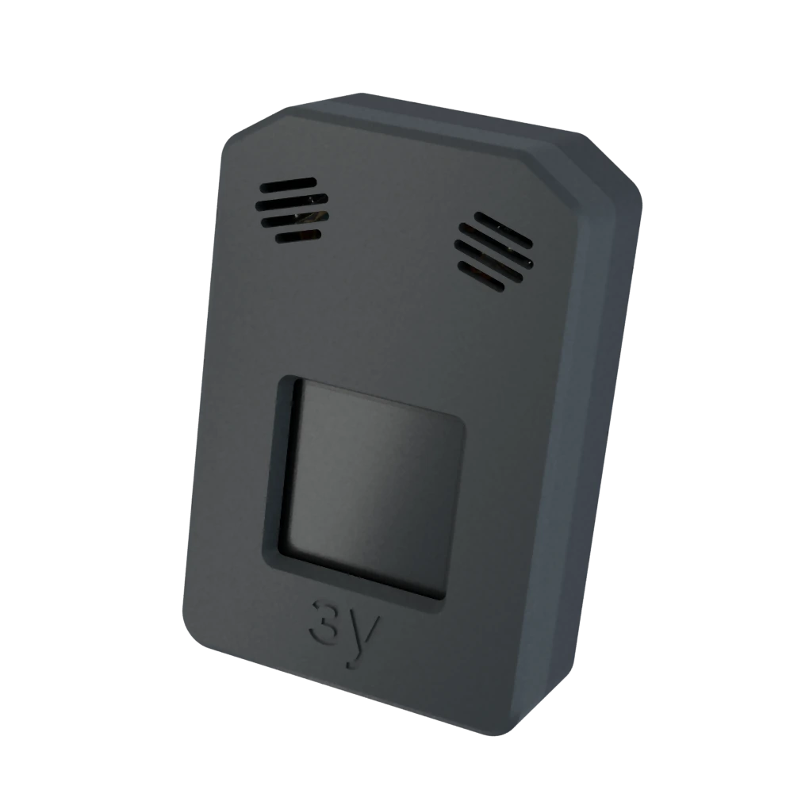
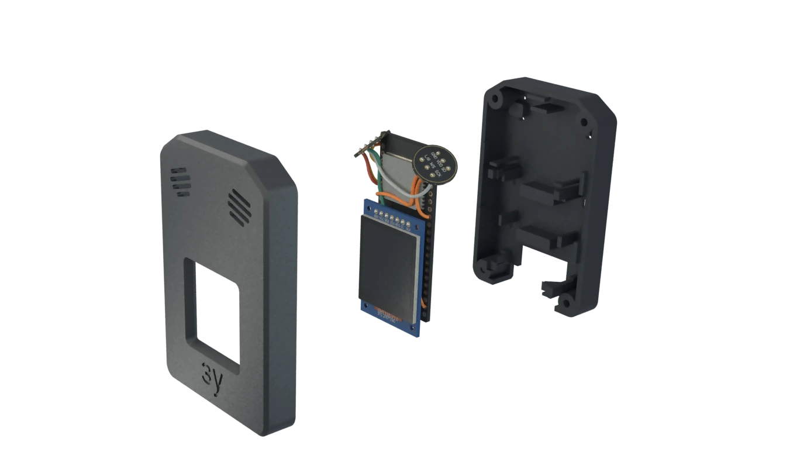

Телефон или гарнитура
Открой приложение и нажми «Начать запись». Перед стартом проверь выбранный микрофон, а во время записи следи за уровнем входа.

На паре или встрече отметь важное одним нажатием. После открой карту разговора и послушай нужный момент.
Спереди виден экран. У верхнего края звук попадает к двум микрофонам через отдельные прорези. Кабель подключается снизу.
Начни с калибра из архива. На нём можно примерить USB-штекер, винт и гайку до печати всего корпуса. В комплекте есть инструкция и редактируемая модель.

Телефон на парте, диктофон ближе к преподавателю или запись, которую прислал друг. Выбери, с чего начать.
Открой приложение и нажми «Начать запись». Перед стартом проверь выбранный микрофон, а во время записи следи за уровнем входа.
Найди фразу и нажми на неё. Услышишь тот самый момент, даже если приложение ошиблось в слове.
Как работать с записьюНайди слово в расшифровке и нажми на строку. Плеер откроется на нужной секунде.
Приложение отмечает сомнительные фразы. Открой отметку и прослушай исходный звук, прежде чем использовать цитату.
Из расшифровки «зу» сам строит карту тем. Нажми на ветку, чтобы открыть цитаты и услышать решение или вопрос. Карту можно сохранить для XMind.
Открыть карту своей записиИз тезиса можно перейти к его источнику, когда у него есть ссылка. Закладкой удобно отметить объяснение, к которому захочется вернуться.
В прототипе диктофон передаёт звук. Текст собирается на телефоне или на твоём Mac. Выбирай, где удобнее хранить и разбирать записи.
Русскую речь распознаёт GigaAM на телефоне. Модель речи занимает 225 МБ, модель конспекта ещё 343 МБ. Их можно получить один раз или установить сборку с моделями.
После установки моделей речь и конспект обрабатываются на Mac. При сопряжении с телефоном записи можно переносить между устройствами.
Приложение использует русское распознавание iOS, если оно доступно для работы без сети. В Safari можно открыть аудио и готовые субтитры.
Открой аудио в браузере. Можно замедлить речь, поставить закладку и приложить субтитры. Всё останется на устройстве.
Версия 0.5.23
Запись, расшифровка и карта разговора. Выбери сборку для своего устройства.